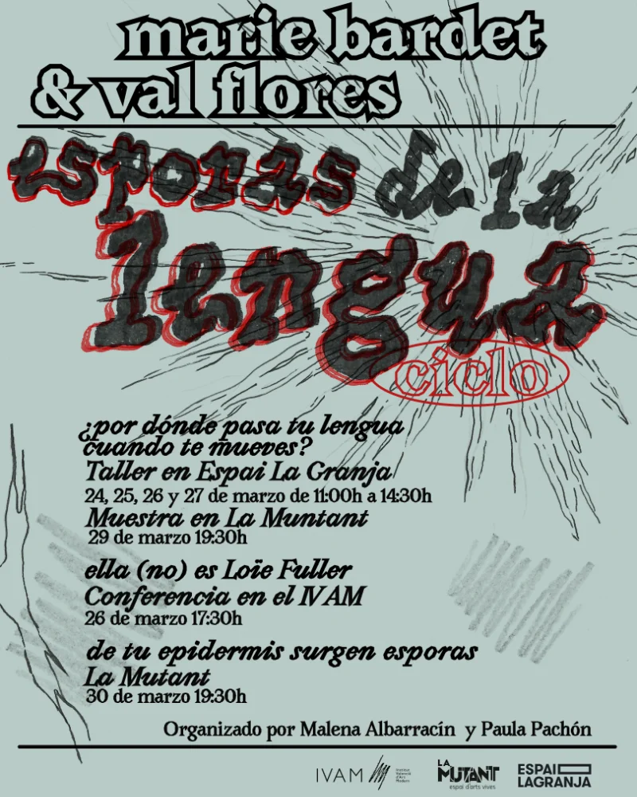
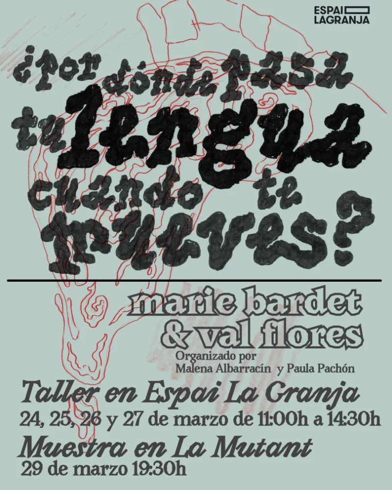
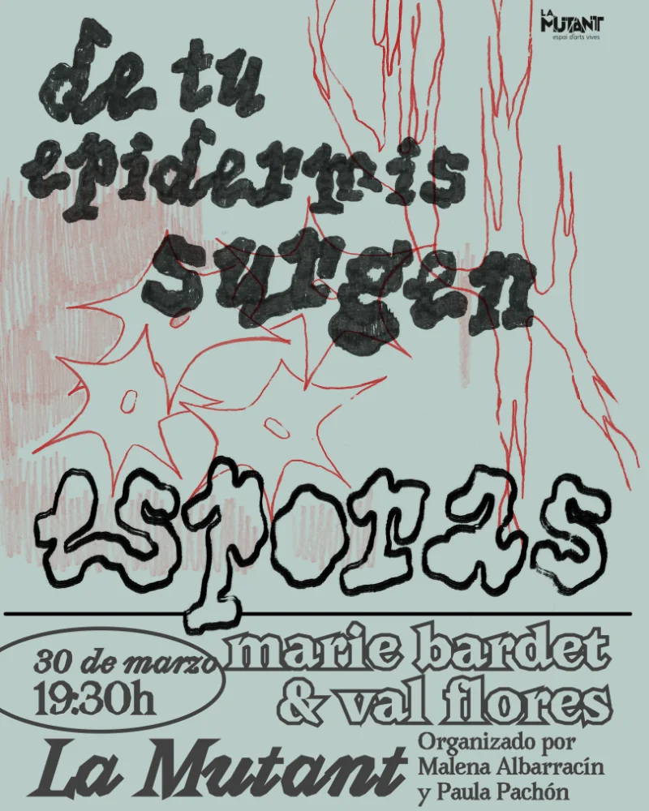
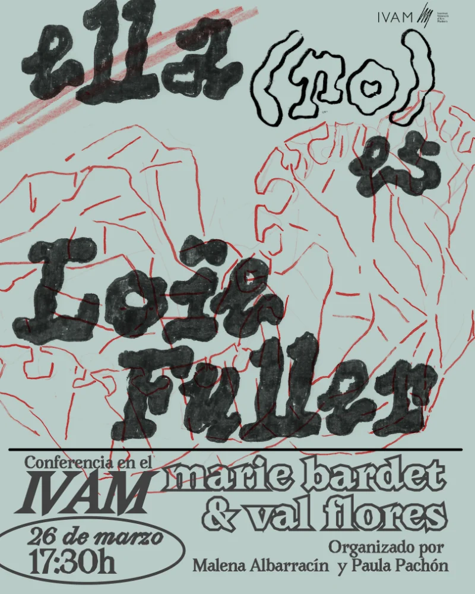

proyecto - esporas en la lengua
Cartelería
“Esporas de la Lengua” es un ciclo de tres jornadas que se celebraron entre distintos espacios culturales de Valencia en 2025.

Diseño de los cuatro carteles para la difusión del evento


